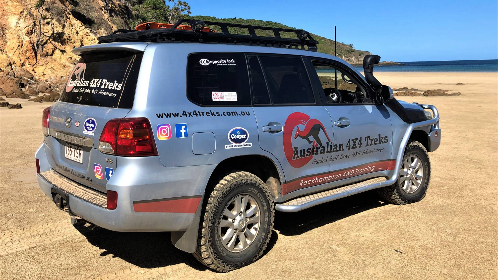
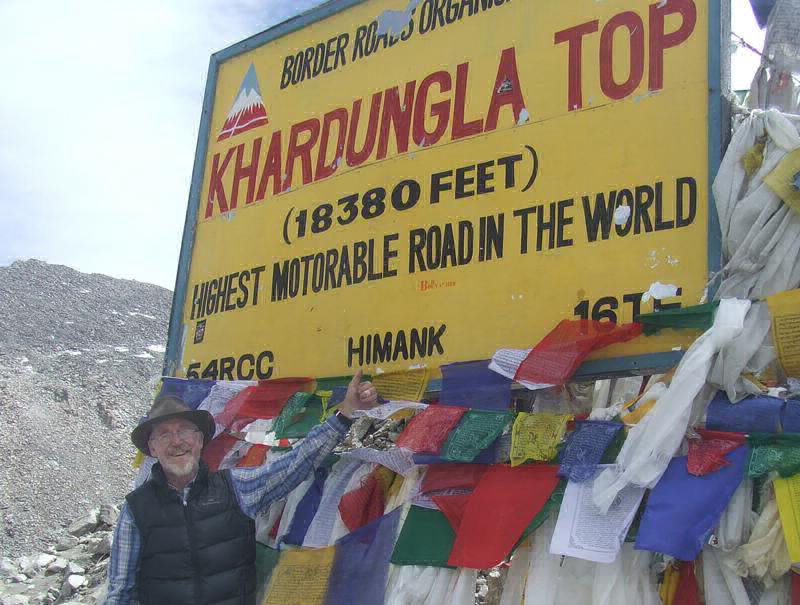
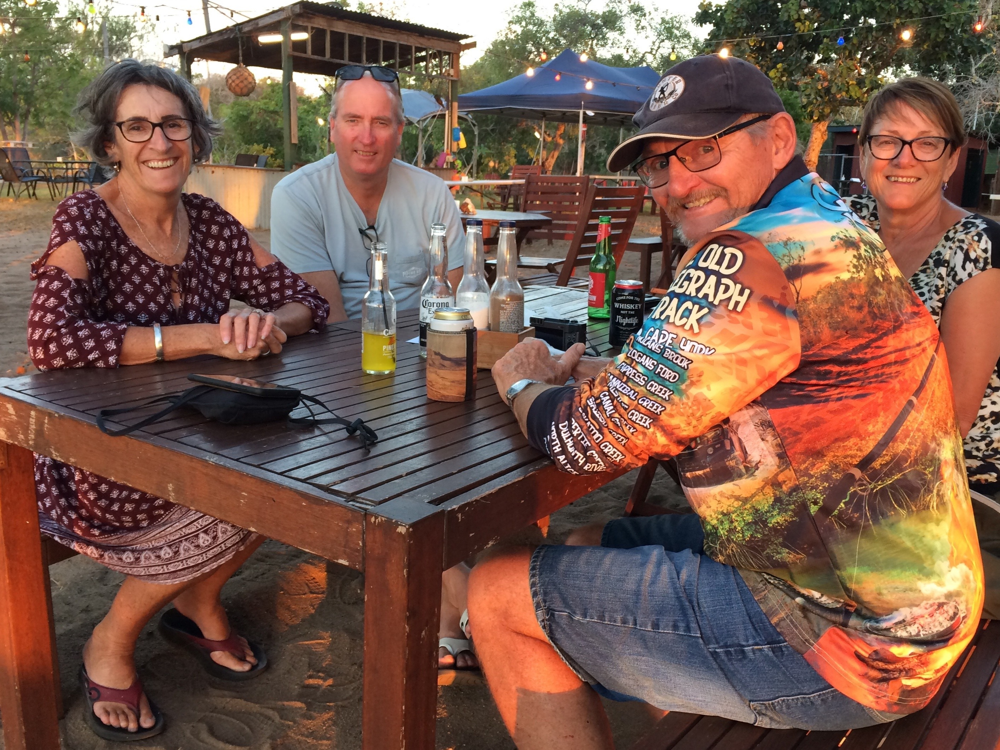

Address
208 Quay Street
Rockhampton
Queensland 4700
Australia
Tony is a professional 4WD instructor (Rockhampton 4WD Training) and remote area tour guide, having been involved in the 4WD industry for the last 16 years. With the qualifications of Masters Degree in Wildlife Management, Degree in Tourism and Certificates in 4WD Training, he is also a self-confessed "wildlife fanatic".
When he's not away leading tours or 4WD instructing, Tony also works on wildlife surveys and as a 'Fauna Spotter-Catcher' with a local Environmental Consultancy.
Tony is an avid outdoorsman, keen photographer and fisherman and very experienced in the backcountry, learning how to four wheel drive in the rugged mountains of New Zealand’s South Island.
Tony has visited many parts of Australia in the course of his work, safely leading groups of customers in their own vehicles to remote and iconic locations such as the Kimberley, Arnhem Land, Cape York, Flinders Ranges, Central Australia, the Canning Stock Route and the Victorian High Country.
He now lives in Rockhampton, Queensland with his Environmental Scientist wife Helen and 12 year old twin boys, Thomas and Lachlan.
"It's all about sharing the adventure of travel in remote locations, places most people are never likely to go on their own. Seeing the smiles on faces and enjoying the camaraderie of a group of people I'm helping to accomplish life-long goals is priceless.
We use a network of travel experts around the World to provide a seamless experience for our customers. Our professional tour guides provide instruction and support throughout each tour to help our customers successfully and safely tackle challenging terrain in isolated situations.
Up to 8 customer vehicles come on our tag-along tours which are a mix of self, part and fully catered. They are led by experienced guides from Australia, New Zealand and Scotland and we always have a local assistant with us as on our International tours as a mechanic/interpreter to help smooth the way.
Hearing our customers recounting their day's achievements around the campfire at night gives me a huge sense of satisfaction and lets me know that I'm doing the best job possible.
So, who's up for an adventure?"
- Tony Davys, AU4X4TREKS


After half a lifetime building roads in Asia as a civil engineer, Steve returned to New Zealand and went into the 4WD import business. This natually progressed into off-road vehicle setup and guiding customers through the rugged mountains of the South Island.
Through Steve's many contacts, tours to the Himalayas, Mongolia and Siberia resulted in following years. He now regularly leads tours, with the help of local guides/mechanics, to these remote and exotic locations.
"To be standing at 4572m (15,000ft) on top of the Penzi La Pass, right beside a very pretty mountain lake with Marmots and a Yak grazing around its shores, looking down on the mighty Suru riverbed, the Drang Drung Glacier soaring up into peaks as high as 7315, (24,000ft) and one of the world’s highest valleys stretching away to the East will give you some idea of this majestic land."
- Steve Beston, NZ4X4TREKS

We provide a safe and hassle-free way for people to travel to remote locations. Our carefully planned tours are designed to let you safely experience incredible 4X4 locations with like-minded and enthusiastic companions in places most people would never go by themselves.
Very simply put, you follow the tour leader in your own or a hired 4X4 vehicle. And you don't need to have any off-road driving experience because our professional tour guides are also four wheel driving instructors, providing instruction and support throughout each tour to help customers successfully and safely tackle challenging terrain in isolated situations. You will come away from a tour with us with a real sense of achievement and 4X4 skills to last you a lifetime.
We use a network of travel experts around the World to provide a seamless experience for our customers. Up to 8 customer vehicles come on our tag-along tours which are a mix of self, part and fully catered and accommodated or camping, depending on the location.
Our guides are experienced 4X4 tour leaders from Australia, New Zealand and Scotland. On our far-flung International treks, we also take a local mechanic who acts as our interpreter to help us along the way.
There's nothing like local knowledge to get the most out of a trip. We take away the hassle of trying to figure out exactly where to go, how long it takes to get there, what the facilities are like and how to best use your time to see all of the highlights.
Pack your sense of adventure!
208 Quay Street
Rockhampton
Queensland 4700
Australia
Site was started with Mobirise